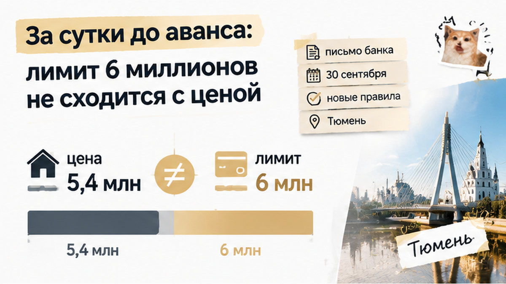
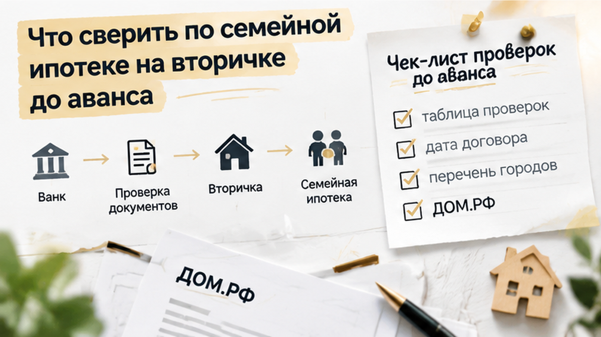
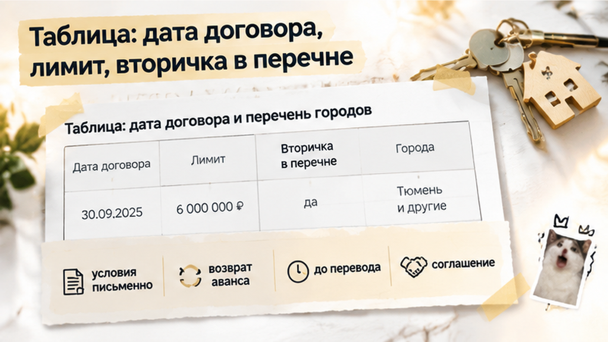

За сутки до аванса в 300 тысяч банк пересчитал семейной паре из Тюмени ипотеку на двушку за 5,4 миллиона — семья остановила сделку и не внесла деньги. Одобрение пришло ещё в сентябре, а кредитный договор выходил на октябрь, когда для региона заработали новые правила семейной ипотеки с лимитом 6 миллионов. Банк фиксирует условия на день подписи договора, а не на день одобрения. Вечером 30 сентября Ольга прочитала письмо из банка, а утром вместо перевода продавцу набрала меня. Квартиру семья в итоге не купила, но 300 тысяч остались у неё, а не у продавца.
Я Святослав Шакин, The Риэлтор, Тюмень. Разбираю вторичку и семейную ипотеку до аванса, а не после перевода денег. Смотреть разборы и задать вопрос можно в Telegram и MAX.
Ольга и Денис искали двушку на вторичке почти два месяца. Сыну пять лет, доход подтверждён, поэтому семейная ипотека выглядела очевидным вариантом. Банк прислал одобрение быстро и без лишних вопросов. Для семьи это была почти печать на сделке: банк сказал «да», значит, осталось найти квартиру и договориться о цене.
Подвох простой. Одобрение не договор и не обещание держать условия до конца. Это предварительное «мы в целом готовы», и банк ещё раз сверит его с правилами, которые действуют в день подписания кредитного договора. Когда правила меняются, цифра в приложении относилась к одной дате, а сделка выходит на другую.
Про 1 октября семья слышала так же, как все: мельком, в новостях, «что-то поменяют». Связать это со своей покупкой никто не догадался, ведь одобрение уже лежало в телефоне. На вторичке так часто бывает: всё выглядит готовым ровно до момента, когда кто-то проверит бумаги на нужную дату. Похожий случай был, когда продавец показал справку о закрытии ипотеки, а банк всё ещё держал залог.


Квартиру нашли в конце сентября: двушка на вторичном рынке за 5,4 миллиона. Своих денег хватало на первый взнос и аванс, всё остальное должна была закрыть семейная ипотека. Запаса не было никакого. Если банк даёт меньше или на других условиях, разрыв между ценой и деньгами закрыть нечем. У большинства семей с детьми на вторичке так и есть: ипотека не помогает купить, ипотека и есть покупка.
Продавец торопил. Он сам подбирал себе жильё и хотел получить аванс до конца недели, чтобы снять квартиру с показов. Договорились так: 30 сентября созвон, 1 октября аванс 300 тысяч и подписание соглашения, следом выход на сделку. По срокам всё выглядело аккуратно. Только никто в этой цепочке не задал простой вопрос: на какую дату банк будет считать условия по кредиту?
Саму квартиру семья проверяла добросовестно: документы собственника, кто прописан, нет ли обременений. Но у банка свой взгляд на объект, и цена в объявлении для него не главное. Если оценщик видит меньше, уменьшается и сумма кредита, и «одобренные» деньги снова расходятся с ценой. Как это выглядит вживую, видно по истории про автооценку квартиры на два миллиона ниже рынка. Здесь до оценки даже не дошло: всё сломалось на день раньше.
Письмо из банка пришло 30 сентября, ближе к вечеру. Ольга переслала его мне с одной строкой: «Это что, нормально?» Банк коротко сообщал, что кредит по семейной программе посчитают по условиям на дату подписания кредитного договора. Подписание стояло на октябрь, значит, и условия будут октябрьские. Месяц семья жила с одобрением как с готовым билетом, а за один вечер оно стало предварительным расчётом.
Если по-простому, одобрение условия не замораживает. Банк этим говорит: «В целом мы готовы вам дать». Сумму, ставку и лимит он фиксирует в день, когда вы садитесь подписывать кредитный договор. Поменялись правила между одобрением и подписью, значит, заявку пересчитают. Злого умысла тут нет, так устроена сама программа.
С 1 октября 2026 года для Тюменской области у семейной ипотеки новые параметры: 10% и лимит 6 миллионов рублей, это данные ДОМ.РФ. Новость семья видела. Но прочитала её как «нас не касается, у нас уже одобрено». Эту ошибку я вижу у покупателей вторички чаще всего: человек думает, что бумага из банка защищает его от календаря.
Похожая история у меня уже была. Там семья тоже прошла одобрение и дошла почти до финиша, а регистрацию отменили из-за одной строки в ЕГРН. Механика другая, а урок тот же: одобрение открывает проверку, а не закрывает её.
Такие письма из банков я разбираю в Telegram и MAX: что в них написано на самом деле и что делать до аванса. Подписывайтесь, пока вы ещё смотрите квартиры, а не подписываете соглашение об авансе.

Аванс в 300 тысяч стоял на 1 октября, на полдень, у продавца. Утром мы с Ольгой и Денисом считали заново. Двушка стоит 5,4 миллиона. Накоплений хватало на первый взнос, всё остальное должна была закрыть ипотека. По старому одобрению всё сходилось до тысячи. По письму банка новые цифры появятся только после пересчёта, а подтвердить сумму до полудня банк не мог.
На бумаге лимит в 6 миллионов выглядит с запасом, ведь квартира дешевле. Но лимит — это потолок, а не обещание. Сколько банк реально выдаст, решит пересчёт: платёж, доход семьи, оценка квартиры. Просядет хоть одно звено, и разрыв придётся закрывать живыми деньгами. Живых денег не было: всё, что накопили, уже лежало в первом взносе.
Денис хотел платить: «Квартира хорошая, продавец ждать не будет, уйдёт другим». Понять его можно. Только по соглашению на столе 300 тысяч не возвращались, если покупатель не выходит на сделку по любой причине, в том числе из-за банка. Про ипотеку там была одна фраза: «покупка с использованием кредитных средств». Ни суммы, ни условия «если банк не подтвердит».
До полудня Ольга позвонила продавцу и сказала как есть: банк пересчитывает заявку под новые правила, аванс внесём, когда получим сумму письменно. Продавец согласился подождать несколько дней, но честно сказал, что показы не остановит. Пересчёт затянулся, и квартиру забрал покупатель с наличными. Семья осталась без этой двушки, зато с 300 тысячами на счёте. А сентябрь мог закончиться и без квартиры, и без этих денег.
Одобрение выдали до 1 октября, а накануне аванса банк пересчитывает лимит: вы бы внесли 300 тысяч, «чтобы не упустить», или остановили сделку? Пишите в комментариях. Особенно интересно услышать тех, кто уже отдавал аванс под одобрение, которое потом «поплыло».

Одобрение в приложении значит только одно: банк готов дать деньги. Сколько и под какой процент, он фиксирует в момент выдачи кредита в отделении. Поэтому до любого аванса я первым делом прошу банк письменно ответить, по каким условиям будет договор, если выходим на сделку в конкретную дату. Ответ нужен письмом или в чате с менеджером. Устное «да всё нормально» не считается.
Потом считаем на бумаге. Берём цену квартиры, вычитаем взнос, который реально лежит у вас на счёте. Остаток и есть сумма, которую должен дать банк. Её сравниваем с новым лимитом: с 1 октября 2026 года в Тюменской области семейная ипотека идёт под 10% и до 6 миллионов, по данным ДОМ.РФ. Но лимит работает как потолок, а не как обещание. Реальную сумму двигают доход, платёж и оценка. Если оценщик поставит меньше цены продавца, разницу добираете своими деньгами. Если оценка уйдёт вниз, разрыв снова ложится на вас — это отдельный риск, который лучше проговорить до аванса.
И ещё два момента. Подходит ли сама квартира под семейную программу на вторичке, смотрим по актуальному перечню банка на дату договора. То, что говорили летом, уже не в счёт. А деньги банк переводит только после регистрации, так что любое изменение до неё бьёт по вам. Поэтому в соглашение об авансе я прошу вписать прямым текстом: аванс возвращается, если банк не выдаст кредит на заявленных условиях. Строка всего одна, а за ней стоят 300 тысяч.

Всё это можно пройти за один вечер, до того как продавцу уйдёт хоть рубль.
| Что сверить | Где взять ответ | Что будет, если пропустить |
|---|---|---|
| Дата кредитного договора: до или после 1 октября | Письменный ответ банка | Одобряли по старым правилам, а считают по новым |
| Лимит 6 млн и ставка 10% для региона | Банк, сайт ДОМ.РФ | Суммы не хватает, разрыв с ценой закрыть нечем |
| Цена минус ваш взнос меньше лимита | Свой расчёт на бумаге | Разница всплывает накануне аванса |
| Вторичка в этом месте подходит под программу | Актуальный перечень банка | Отказ уже после одобрения |
| Оценка не ниже цены | Отчёт оценщика | Доплата своими деньгами |
| Возврат аванса при отказе банка | Текст соглашения об авансе | 300 тысяч остаются у продавца |
Семья из этой истории квартиру упустила, а 300 тысяч сохранила. Дело не в везении. Они остановились, когда цифры перестали сходиться, и попросили у банка условия письменно. Вторичку по семейной ипотеке в Тюмени покупать можно и сейчас, просто с калькулятором и письмом банка на руках, а не со скриншотом одобрения.
Если ваше одобрение пришло до 1 октября, а сделка выходит позже, не ждите звонка менеджера накануне. Запросите условия на дату договора сейчас и сверьте сумму с ценой квартиры. На это уйдёт день. Зато аванс потом отдаёте спокойно, а не в последнюю ночь с калькулятором в руках.